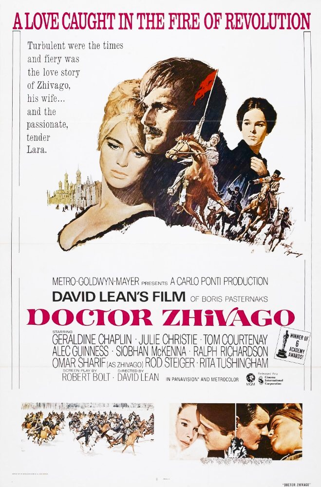

Doctor Zhivago
38th Academy Awards
(Oscars 1966)
10 Nominations, 5 Awards
| Nominations | ||
|---|---|---|
| Category | Nominees | Result |
| Best Picture | Carlo Ponti | Nominated |
| Actor in a Supporting Role | Tom Courtenay | Nominated |
| Directing | David Lean | Nominated |
| Writing (Screenplay--based on material from another medium) | Robert Bolt | Won |
| Cinematography (Color) | Freddie Young | Won |
| Film Editing | Norman Savage | Nominated |
| Art Direction (Color) | Dario Simoni, John Box, and Terry Marsh | Won |
| Costume Design (Color) | Phyllis Dalton | Won |
| Sound | A. W. Watkins and Franklin E. Milton | Nominated |
| Music (Music Score--substantially original) | Maurice Jarre | Won |